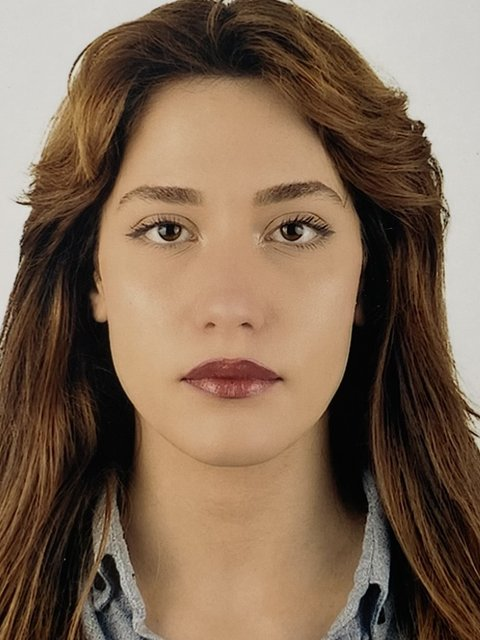
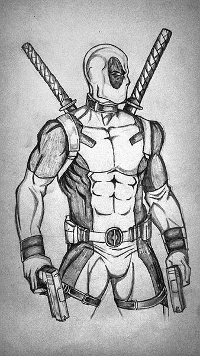

Şevval Çikot
Hi! I'm writing from the shores of the Mediterranean. Scroll down and let's dive together.

From the shore to the deep,
a learning journey.
Hi! I'm Şevval Çikot. I have been studying Computer Programming at Akdeniz University since 2025.
I graduated from Bayburt Rekabet Kurumu Girls' Anatolian High School. My curiosity about technology led me to this field, and I am currently improving myself in artificial intelligence.
Fields I work on
- 01
Graphic Design
Visual and design work with Adobe Photoshop.
- 02
Web Design
Learning to build web pages with HTML and CSS.
- 03
Programming
Exploring the basics of programming with C#.
- 04
Writing
I love putting my thoughts and what I learn into writing.
A drawing,
coloured as the water rises.
I start with a black-and-white pencil drawing.
With layers and blend modes I build the colour from the bottom up.
Keeping its shading and texture, the drawing becomes a vivid image.


What lies deeper?
Photos of the places I studied